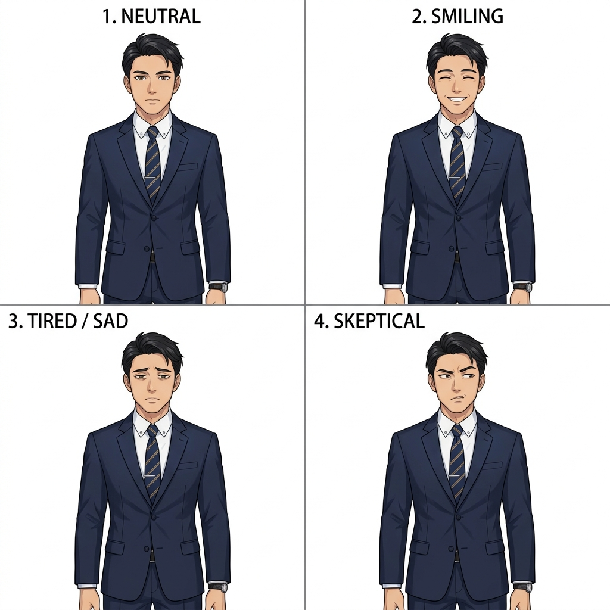

Day 1
月曜日
【あなたの状態】
⚡
体力(時間):
3
💖
霊的健康度:
100
🕊️
聖霊の導き(ボーナス): +
0
🌍 現実でこの人のために祈った
(ボーナス獲得)
職場の同僚 (30代男性)
職場の同僚
【祈りのノート（インプット記録）】
祈った回数:
0
回
傾聴・対話:
0
回
「職場の世間体を気にして、宗教的な話題を避けているようだ。」
神の摂理（ロール）
1
1
出目
2
+ ボーナス
0
=
2
失敗 (Miss)
システム
ゲームを開始しました。結果は神に委ね、愛をもって種を蒔きましょう。
▼
アプローチする (AP 1)
とりなし祈る (AP 1)
ディボーションで休む (AP 1)
次の日へ
セーブ